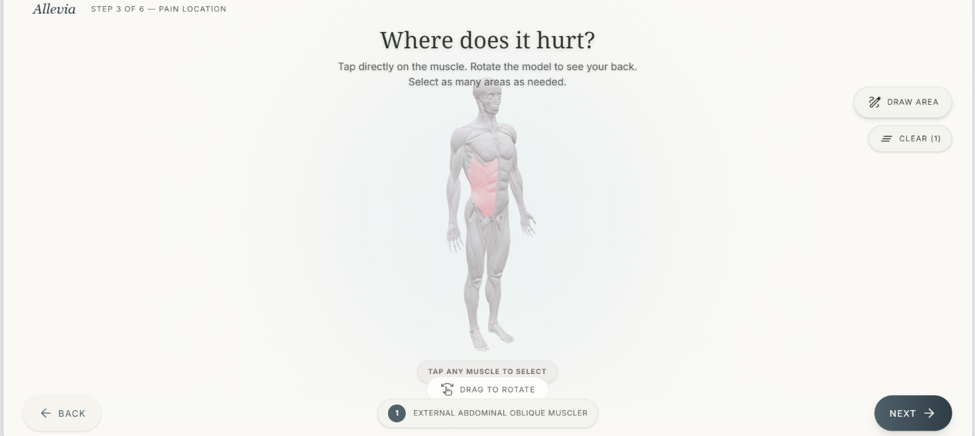
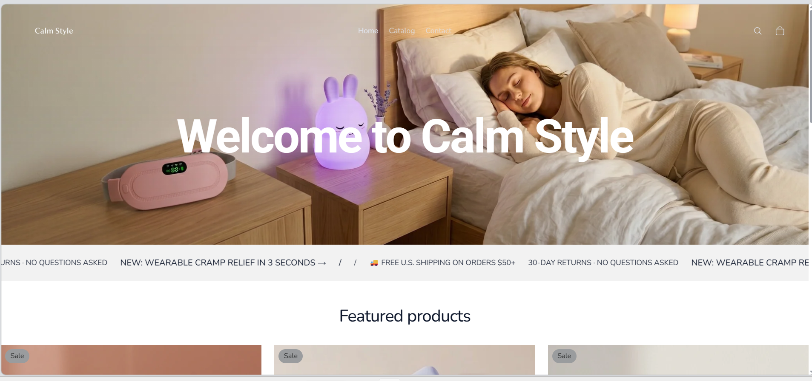

Building scalable AI & Data Systems
Hello, I'm Prabin KC. A Computer Science student (GPA 3.78) at Youngstown State University building real things—shipping full clinical SaaS platforms and high-conversion e-commerce architectures by leveraging AI workflows.
Academic Credentials
Education & Certifications
Academic qualifications, ABET computer science studies, and professional certifications representing core technical foundations.
Academic Core
BS in Computer Science (ABET Accredited) with a Minor in Mathematics. Expected graduation: Dec 2027. Cumulative GPA: 3.78/4.0.
Data Structures & Algorithms · Databases · Probability & Statistics · Discrete Mathematics
Intellectual Seals
-
■
Harvard CS50Introduction to Computer Science & Python
-
■
DataCamp Career TracksData Analyst in Python, SQL & Excel
Featured Projects
System Execution

Allevia Intake SaaS
Shipped a HIPAA-aligned multi-tenant clinical intake SaaS platform. Features a patient intake kiosk, clinic dashboard, row-level security (RLS) on PostgreSQL, a custom clinical scoring engine, and a RAG AI intake assistant.

Calm Style Store
Launched an e-commerce brand for sleep headbands in two weeks. Designed custom Shopify Balance theme modifications using CSS, conducted structured market research, and optimized conversion pathways.
Sensor Fault Pipeline
Built an anomaly detection pipeline in Python and SQL for vehicle sensor logs. Leveraged SciPy and NumPy to locate fault patterns and designed automated validation, minimizing manual oversight.
Core Expertise
Technical Skills
Grounded database design, clean software development, and validation pipelines for stable runtime operations.
AI & Engineering
- ■ Claude & GPT-4
- ■ RAG Pipelines
- ■ Python & JavaScript
- ■ React & FastAPI
Data Systems
- ■ SQL / PostgreSQL
- ■ Pandas & NumPy
- ■ ETL / SciPy
- ■ Anomaly Detection
BI & Operations
- ■ Power BI / Tableau
- ■ Excel Pivot Tables
- ■ HIPAA Security Design
- ■ Data Validation
Work Experience
Proven Track Record
Professional engineering and analytics roles focused on automating workflows, auditing complex databases, and improving operational metrics.
Student Office Assistant
Spearheaded internal workflow automations leveraging LLMs and prompt engineering, significantly reducing manual data Entry cycles. Supervised inventory tracking operations for the campus food pantry.
- ■ Workflow Automation: Designed and ran custom AI assistants to automate daily documentation routing, saving hours of weekly operational load.
- ■ Database Integrity: Audited and optimized the pantry inventory database, tracking 1,000+ items with zero discrepancies.
- ■ Technical Support: Managed hardware/software configurations and resolved system administration issues for office personnel.
Data Analyst
Led validation and analysis of complex program databases to support remote field auditing. Built analytics assets to improve operational reporting speeds.
- ■ Rigorous Auditing: Checked 500+ records via SQL and Excel, resolving severe duplicate reporting anomalies.
- ■ Operational Dashboards: Engineered Power BI and Tableau dashboards to track field benchmarks, cutting reporting lag by 20%.
- ■ Data Cleaning: Wrote Excel Power Query and SQL scripts to filter noise out of program databases.
Open Channel
Establish Connection
Ready to collaborate on AI systems, data products, or engineering challenges. Let's build something that matters.